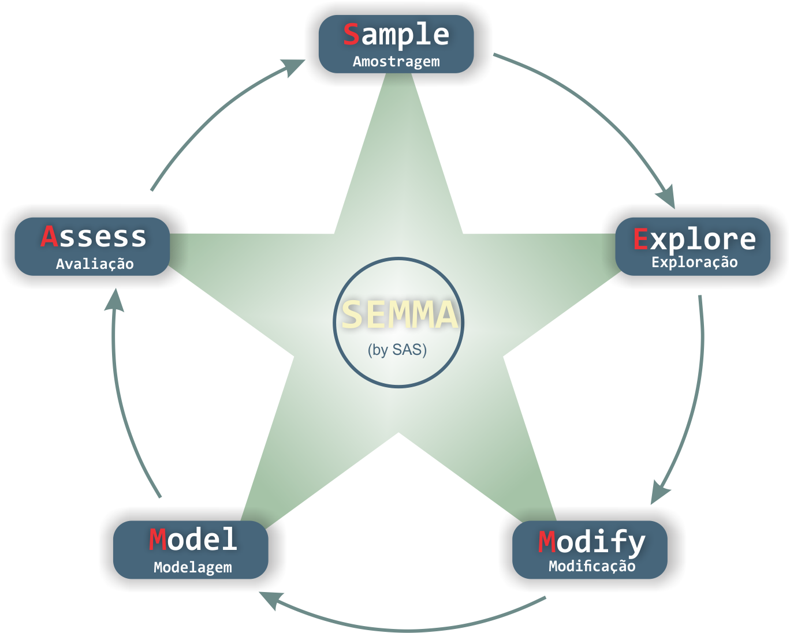
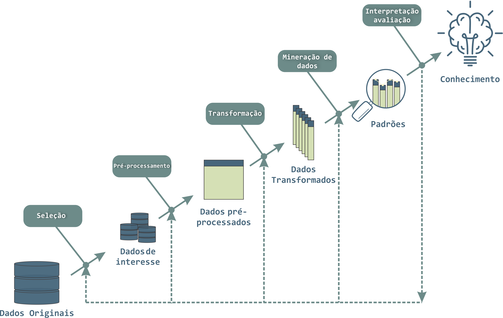

CRISP-DM, SEMMA e KDD
-
Existem várias metodologias para gerenciar projetos de mineração de dados.
-
Três das metodologias mais comuns são CRISP-DM, SEMMA e KDD.
CRISP-DM
-
CRISP-DM (CRoss Industry Standard Process for Data Mining) é uma metodologia de mineração de dados amplamente utilizada.
-
Envolve seis etapas: compreensão do negócio, compreensão dos dados, preparação dos dados, modelagem, avaliação e implementação.
-
É uma abordagem iterativa e pode ser adaptada para atender a necessidades específicas do projeto.
CRISP-DM

Compreensão do negócio
- Nesta fase, o objetivo é entender os objetivos do projeto, identificar as necessidades do usuário e definir os critérios de sucesso.
- É importante definir claramente o escopo do projeto e entender os recursos disponíveis.
Compreensão dos Dados
- Nesta fase, o objetivo é coletar, limpar, integrar e explorar os dados.
- É importante identificar a qualidade dos dados, definir as variáveis relevantes e compreender a estrutura dos dados.
Preparação dos Dados
- Nesta fase, o objetivo é selecionar as variáveis relevantes, transformar os dados e criar conjuntos de dados de treinamento e teste.
- É importante garantir que os dados estejam limpos, completos e estruturados de maneira adequada para a modelagem.
Modelagem
- Nesta fase, o objetivo é construir e avaliar modelos que possam prever ou classificar novos casos.
- É importante selecionar as técnicas de modelagem apropriadas e avaliar a eficácia do modelo usando conjuntos de dados de treinamento e teste.
Avaliação
- Nesta fase, o objetivo é avaliar a eficácia do modelo em relação aos critérios de sucesso definidos na fase de compreensão do negócio.
- É importante avaliar o modelo em conjuntos de dados de teste independentes e garantir que ele atenda aos requisitos do usuário.
Implantação
- Nesta fase, o objetivo é implantar o modelo em um ambiente de produção e monitorá-lo regularmente para garantir que continue a atender aos requisitos do usuário.
- É importante desenvolver um plano de implantação e treinamento para garantir que o modelo seja adotado pelos usuários.
SEMMA
-
SEMMA (Sample, Explore, Modify, Model, Assess) é uma metodologia de mineração de dados desenvolvida pela SAS.
-
Envolve cinco etapas: amostragem, exploração, modificação, modelagem e avaliação.
-
SEMMA é uma abordagem focada no modelo e pode ser usada em conjunção com outras metodologias de gerenciamento de projetos.
SEMMA
Amostragem
- Nesta fase, o objetivo é selecionar um subconjunto representativo dos dados originais.
- É importante garantir que a amostra seja grande o suficiente para fornecer resultados precisos e confiáveis.
Exploração
- Nesta fase, o objetivo é explorar os dados selecionados na etapa anterior e identificar padrões ou tendências.
- É importante visualizar os dados para identificar padrões facilmente e identificar outliers.
Modificação
- Nesta fase, o objetivo é transformar os dados de forma apropriada para que possam ser usados na modelagem.
- É importante realizar a limpeza dos dados, selecionar as variáveis relevantes e transformar os dados para que possam ser usados na modelagem.
Modelagem
- Nesta fase, o objetivo é criar e testar modelos usando os dados preparados na etapa anterior.
- É importante selecionar as técnicas de modelagem apropriadas e avaliar a eficácia do modelo usando conjuntos de dados de treinamento e teste.
Avaliação
- Nesta fase, o objetivo é avaliar a eficácia do modelo em relação aos critérios de sucesso definidos na fase de amostragem.
- É importante avaliar o modelo em conjuntos de dados de teste independentes e garantir que ele atenda aos requisitos do usuário.
KDD
-
KDD (Knowledge Discovery in Databases) é uma metodologia mais ampla que CRISP-DM e SEMMA.
-
Envolve basicamente três etapas: pré-processamento, mineração de dados e pós-processamento.
Pré-processamento inclui limpeza, integração e transformação de dados. A mineração de dados inclui seleção, pré-processamento e modelagem de dados. O pós-processamento inclui interpretação e avaliação dos resultados.
KDD
Seleção
- Nesta fase, o objetivo é selecionar os dados relevantes para o problema de mineração.
- É importante identificar as fontes de dados relevantes e escolher as variáveis de interesse.
Pré-processamento
- Nesta fase, o objetivo é preparar os dados para análise.
- É importante lidar com valores ausentes, tratar outliers e realizar normalização ou padronização de variáveis.
Limpeza
- Nesta fase, o objetivo é identificar e corrigir erros nos dados.
- É importante lidar com dados duplicados, corrigir erros de digitação e identificar e tratar valores discrepantes.
Transformação
- Nesta fase, o objetivo é transformar os dados em uma forma que seja adequada para a análise.
- É importante realizar transformações como discretização, agregação, e normalização para que os dados possam ser usados com sucesso na modelagem.
Mineração de dados
- Nesta fase, o objetivo é aplicar técnicas de mineração de dados para identificar padrões e relacionamentos nos dados.
- É importante escolher as técnicas de mineração de dados apropriadas e avaliar a eficácia dos modelos gerados.
Interpretação e avaliação
- Nesta fase, o objetivo é interpretar os resultados da mineração de dados e avaliar sua relevância para o problema de negócio.
- É importante avaliar a eficácia dos modelos gerados e determinar se as descobertas são significativas e úteis.

Qual metodologia utilizar?
CRISP-DM, SEMMA e KDD são todas metodologias amplamente utilizadas para gerenciamento de projetos de mineração de dados.
CRISP-DM é uma abordagem iterativa em cascata, SEMMA é uma abordagem em cascata focada no modelo e KDD é uma metodologia mais ampla com três etapas principais.
A escolha da metodologia dependerá das necessidades específicas do projeto e dos recursos disponíveis para o gerenciamento do projeto.